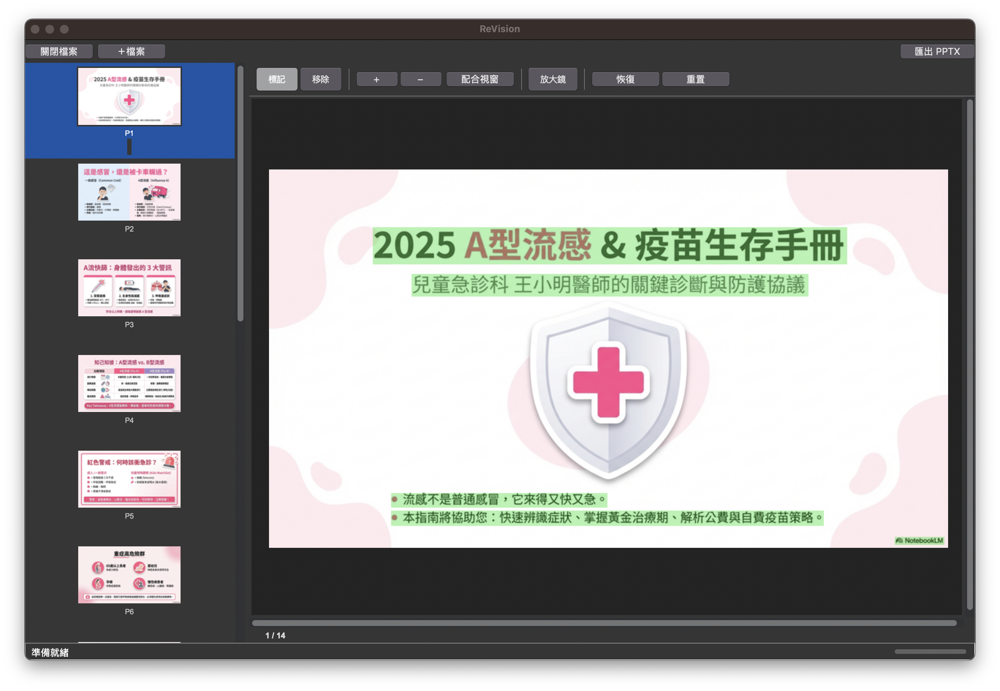
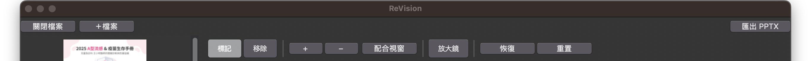
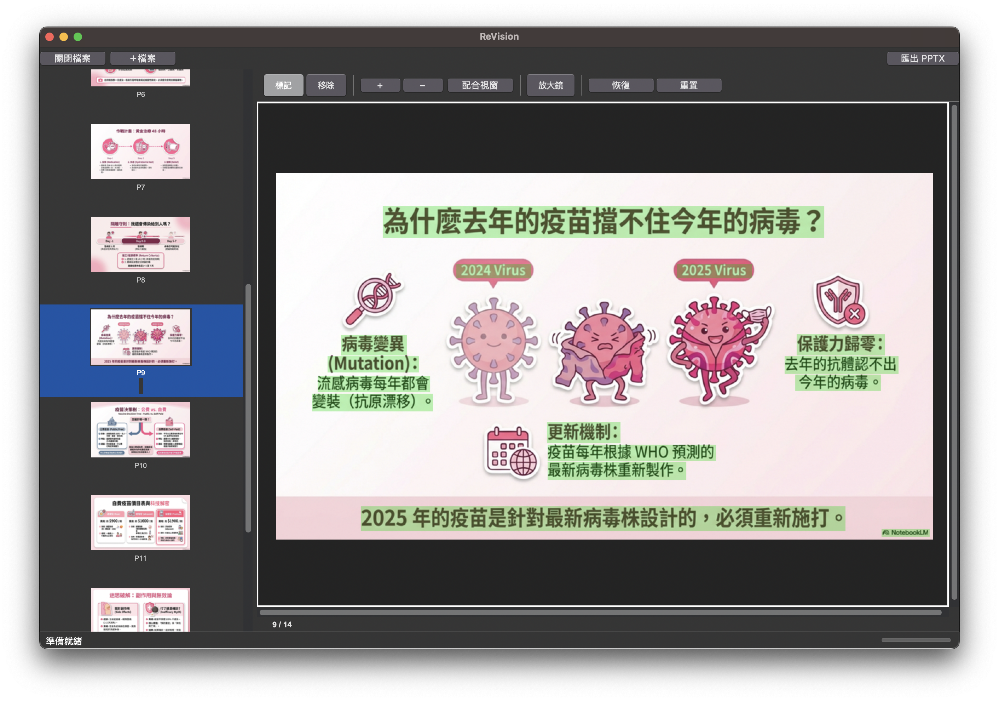
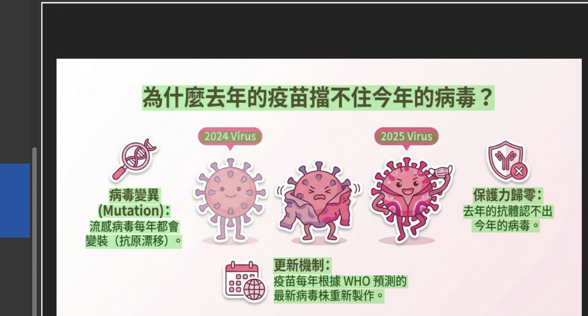
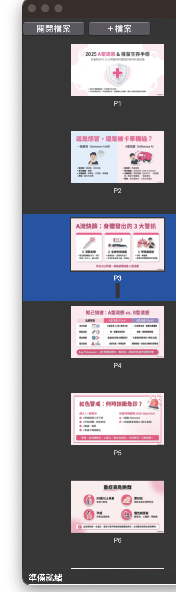

PDF 與圖片轉可編輯簡報——AI 無痕修補，人工精準把關
大多數轉檔工具只給你一鍵匯出，結果不對也無能為力。
ReVision 不一樣——AI 自動處理之後，你還能逐頁檢視、手動修正。
同類軟體僅能處理純色背景。ReVision 即使文字疊在照片、圖表上，也能無痕還原底圖。
AI 辨識不完美？直接標記、擦除、微調，匯出前所有細節你說了算。
匯入多份 PDF 與圖片，拖曳排序、刪除頁面、追加檔案，整合為一份簡報。
OCR 與 AI 運算皆在本地端完成。機密文件絕不上傳雲端。
掃描式 PDF 轉為含真實文字的 PPTX，讓 AI 工具完整理解每一頁。
| 功能 | ReVision | 一般轉檔工具 |
|---|---|---|
| 複雜背景修補（照片、圖表） | ✅ 深度學習引擎 | ❌ 僅純色背景 |
| 手動介入編輯 | ✅ 標記 / 擦除 / 微調 | ❌ 一鍵匯出 |
| 字型大小 / 顏色 / 粗體還原 | ✅ 精準偵測 | ⚠️ 部分支援 |
| 多檔整合 / 頁面管理 | ✅ 拖曳排序、刪除、追加 | ❌ 單檔處理 |
| 隱私保護 | ✅ 全本機運算 | ⚠️ 多需上傳雲端 |
一眼看懂 ReVision 的操作介面

上方工具列全覽：

五個步驟，從 PDF 到完美簡報
點擊左上角 ＋檔案 按鈕，選擇 PDF 或圖片檔案。支援一次選擇多個檔案。
也可以在 Finder 中對 PDF 或圖片右鍵 →「以其他應用程式開啟」→ ReVision，直接匯入。
匯入後，ReVision 自動以 macOS 原生 OCR 辨識所有文字，並以 綠色遮罩標示。
綠色區域的文字將在匯出時被移除、背景 AI 修補，最後還原為可編輯的文字方塊。

放大看——綠色矩形就是 OCR 偵測到的文字區域：

這是 ReVision 的核心優勢——AI 辨識不完美時，你可以直接手動修正：
左側面板是你的頁面管理區：

確認每一頁都滿意後，點擊右上角 匯出 PPTX 按鈕。ReVision 會逐頁執行：
善用快捷鍵可大幅加速你的工作流程
| 快捷鍵 | 功能 |
|---|---|
| E | 切換「標記」↔「移除」模式 |
| W | 切換「矩形框選」↔「筆刷」模式 |
| Z | 開啟 / 關閉放大鏡 |
| C | 切換遮罩顏色（綠→紅→藍→…） |
| R | 重置當前頁面遮罩 |
| 快捷鍵 | 功能 |
|---|---|
| + 或 = | 放大畫面 |
| - | 縮小畫面 |
| ⌘ 0 | 配合視窗（Fit to Screen） |
| Space | 配合視窗 |
| 滾輪上 / 下 | 縮放畫面 |
| 按住 ⌥ Option + 拖曳 | 平移畫面（Pan） |
| 快捷鍵 | 功能 |
|---|---|
| ⌘ Z | 復原（Undo） |
| ⇧ ⌘ Z | 重做（Redo） |
| ↑ / ← | 上一頁 |
| ↓ / → | 下一頁 |
| Enter | 儲存當前頁面變更 |
| 操作 | 功能 |
|---|---|
| 左鍵拖曳 | 框選 / 筆刷繪製遮罩 |
| 滾輪 | 縮放畫面 |
| ⌥ Option + 左鍵拖曳 | 平移畫面 |
| 右鍵（或 Ctrl+左鍵） | 右鍵選單 |
| 按住 Shift + 拖曳 | 等比例約束 |
安裝 ReVision 後，在 Finder 中對任何 PDF 或圖片檔案：
如果 ReVision 尚未開啟，系統會自動啟動 App 並匯入檔案。
掃描式 PDF 或截圖簡報，AI 工具（如 NotebookLM）無法正確擷取文字。用 ReVision 轉為含真實文字的 PPTX，讓 AI 完整理解每一頁內容。
ReVision 會自動分析每個文字區域的背景複雜度，選擇最佳修補方式：
| 背景類型 | 修補方式 | 速度 |
|---|---|---|
| 純白色背景 | 中位數色填充 | 極快 |
| 漸層 / 簡單色塊 | Telea 算法插值 | 快速 |
| 照片 / 圖表 / 複雜紋理 | LaMa 深度學習 AI | ~10 秒/頁 |
系統全自動判斷，無需手動選擇。
OCR 會偵測所有文字，包含表格和圖表中的。如果不想移除這些文字，請用「移除」工具擦掉該區域的綠色遮罩，讓它保留在背景中。
直接匯入超高解析度圖片（如相機拍攝的 4000×6000 照片）時，AI 修補會自動降縮至 2048px 處理再還原，以確保匯出不會卡住。非遮罩區域保持原始畫質。
每頁處理時間取決於背景複雜度：
輸入支援 PDF、PNG、JPEG、BMP。可混合匯入不同格式，統一匯出為 PPTX。
PDF 會自動偵測頁面尺寸（A4、16:9、4:3 等），非標準尺寸會自動適配。
使用 macOS 原生 Vision OCR 引擎，支援繁體中文、簡體中文、英文、日文等多種語言，且會隨 macOS 更新持續改善辨識準確度。
將舊講義 PDF 轉為可編輯簡報，快速更新教材內容。
課堂拍照或截圖，直接轉為筆記簡報，搭配 NotebookLM 複習。
收到的 PDF 提案需要修改，抽取頁面重新組合成新簡報。
從現有素材快速提取乾淨背景與去背物件。
| 項目 | 需求 |
|---|---|
| 作業系統 | macOS 12.0（Monterey）或以上 |
| 處理器 | 原生支援 Apple Silicon（M1 / M2 / M3 / M4） |
| 輸入格式 | PDF、PNG、JPEG、BMP |
| 輸出格式 | PPTX（Microsoft PowerPoint / Keynote / Google Slides） |
| 網路需求 | 不需要（全離線運作） |